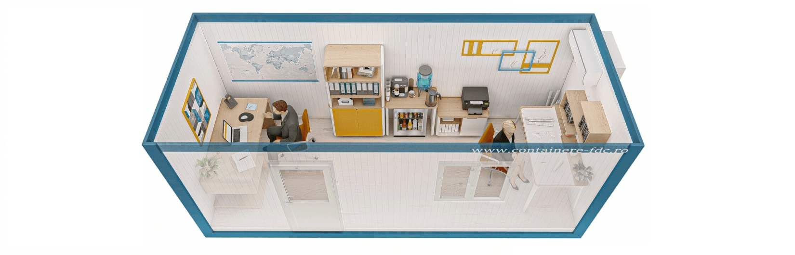

Containerul birou reprezinta o solutie flexibila, accesibila si eficienta pentru orice tip de companie sau organizatie care are nevoie de un spatiu de lucru rapid si modern. Fie ca ai nevoie de un birou individual, o unitate mobila pentru santier sau un spatiu administrativo-comercial, aceste containere modulare pot fi personalizate complet. Constructia metalica galvanizata, panourile sandwich termoizolante si tamplaria PVC asigura durabilitate, izolare termica si fonica, iar montajul se realizeaza fara santier clasic.Containerul birou poate fi livrat atat in forma monobloc, cat si modular – ideala pentru extinderi sau configurari complexe. Cu preturi ce pornesc de la aproximativ 2 550 € + TVA pentru variante de baza si posibilitatea de a integra grupuri sanitare sau vitrine, aceste containere de birou asigura confort si functionalitate pe tot parcursul anului, chiar si iarna.
Containerul birou reprezinta o solutie flexibila, accesibila si eficienta pentru orice tip de companie sau organizatie care are nevoie de un spatiu de lucru rapid si modern. Fie ca ai nevoie de un birou individual, o unitate mobila pentru santier sau un spatiu administrativo-comercial, aceste containere modulare pot fi personalizate complet. Constructia metalica galvanizata, panourile sandwich termoizolante si tamplaria PVC asigura durabilitate, izolare termica si fonica, iar montajul se realizeaza fara santier clasic.
Contactați-ne pentru o ofertă detaliată adaptată nevoilor dumneavoastră.
Cere Oferta Acum